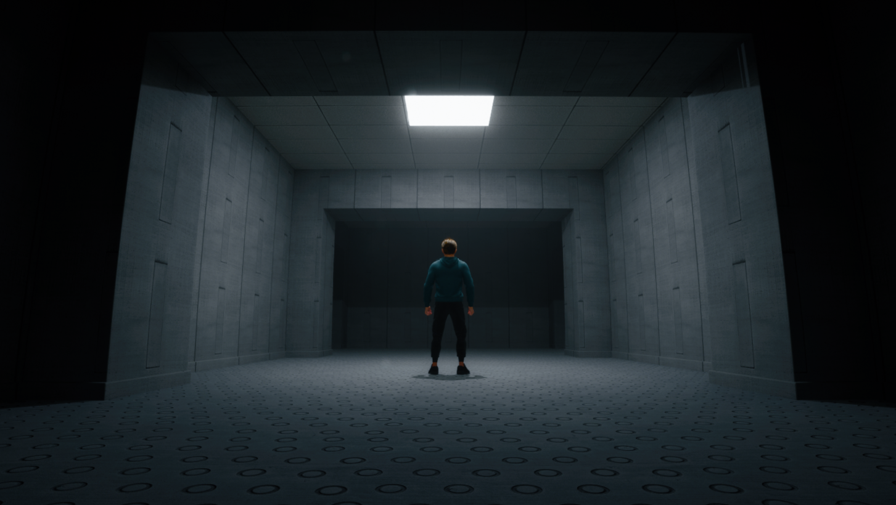
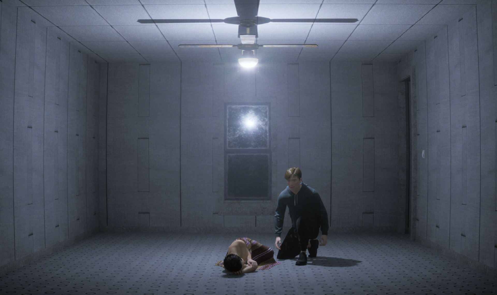
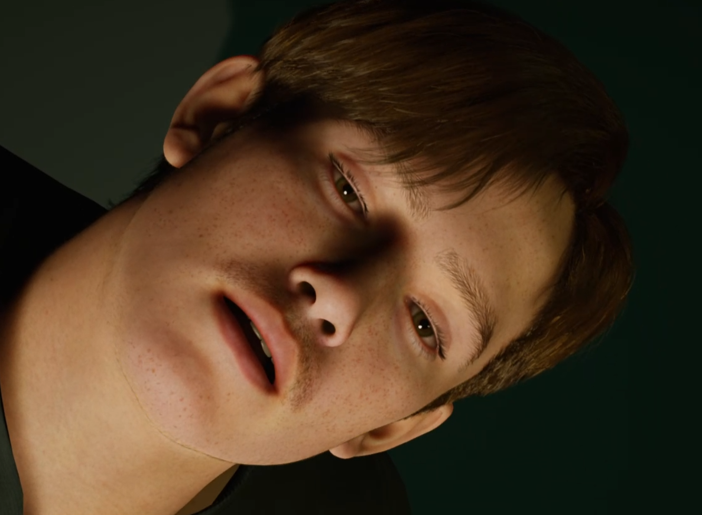

Jonathan Coryn is an artist and video game creator based in Paris, France. After studying game design at the Royal Academy of Denmark, he received his master's degree from the school of Fine Arts in Paris/Cergy.
Usually working as a solo developer, his technical and artistic skills were highlighted in his game, Player Non Player, which won the first prize at the Amaze festival in 2023.
With the desire to create meaningful ludonarrative and playful experiences, he stages troubled and ragdoll-like bodies in desolate, melancholic settings. Rooted in sensitivity and intimacy, these characters are designed as game mechanics that underscore themes of grief, denial, love, sexual and gender identity.
· 2023 ·Ange42 only wanted to be loved — Game Jam · 2023 · Perfection— Game Jam Arte · 2022 · Trouble— Agar Agar Music Clip / Co-direction with Mélanie Courtinat / 3D · 2018 · Dé_Intricate— Game Jam · 2018 · Together— Concept Jam · 2018 · HypnoVR — VR experience / Code and deployment / Collab Mélanie Courtinat · 2017 · As long as we are together— Game Jam · 2015 · Levitation— VR experience / David Guez & Google Cultural Institute / A-Z design on Epoc+Oculus · 2015 · Moon overview — VR experience / Charlie Malgat & Google Cultural Institute / A-Z design for google Cardboard
Exhibitions
· 2023 · Playtopia festival / Cape Town — Exhibits: Player Non Player
· 2023 · Player Non Player, Sorbonne & Le cube Garges / Paris — Exhibits: Player Non Player · 2023 · Serenade, SXSW / Sydney — Exhibits: Player Non Player · 2023 · Amaze / Berlin — Most amazing game award for Player Non Player · 2023 · Indie game nation / Issy-les-M. — Exhibits: Player Non Player · 2023 · SDJV / La flèche — Exhibits: Player Non Player · 2022 · Octobre numérique / Arles — Exhibits: Player Non Player · 2022 · Agar Agar Playtest Tour — Exhibits: Player Non Player Le lieu unique / Nantes Food society / LyonStudio 9424 / Londres Ateliers Wonder / Paris Bliida / Metz Salon IKS / İstanbul Melkweg / Amsterdam La vallée / Bruxelles · 2019 · Isles of Games / Reykjavik — Talk: Play with my Cadaver, yes I studied fine arts · 2018 · Nordic Games / Malmö — Exhibits: Cadavre · 2016 · Centre Pompidou / Paris — Festival Hors Piste / Exhibits: No (Machinima Film) · 2016 · Musée d'art et d'histoire / Saint Denis — Exhibition Partir, un jour / Exhibits: Partir, VR experience · 2016 · MUDAM / Luxembourg — Exhibition S’inventer autrement / Exhibits: Your Body In A Box, VR experience · 2014 · Wanderlust / Paris — Selection “Les Inrocks Lab” / Exhibits: Jupiter’s Inside, 3D film
Press
- Trois Couleurs — Interview -NME — Interview & review about Player Non Player -Le monde — Interview about Player Non Player -Usbek et Rica — Interview about Player Non Player -RTBF — Interview about Player Non Player
Jonathan Coryn is an artist and video game creator based in Paris, France.
Usually working as a solo developer, his technical and artistic skills were highlighted in his game, Player Non Player, which won the first prize at the Amaze festival in 2023.
With the desire to create meaningful ludonarrative and playful experiences, he stages troubled and ragdoll-like bodies in desolate, melancholic settings. Rooted in sensitivity and intimacy, these characters are designed as game mechanics that underscore themes of grief, denial, love, sexual and gender identity.
A boy has met a terrible fate after being brutally separated from his lover. Will you be able to reunite them?
Cadavre is Corjn's next important game project after Player Non Player. It received a CNC fund support for its writing/conception phase.
More soon.



An escape horror game where your boyfriend is sick and slowly turns into a monster. The only way to prevent it is to monitor him.
My Boyfriend died in the Backroom is a game mostly made during an art and digital residency at "l'Abri Genève" in Switzerland. The game will be released for free, more soon.